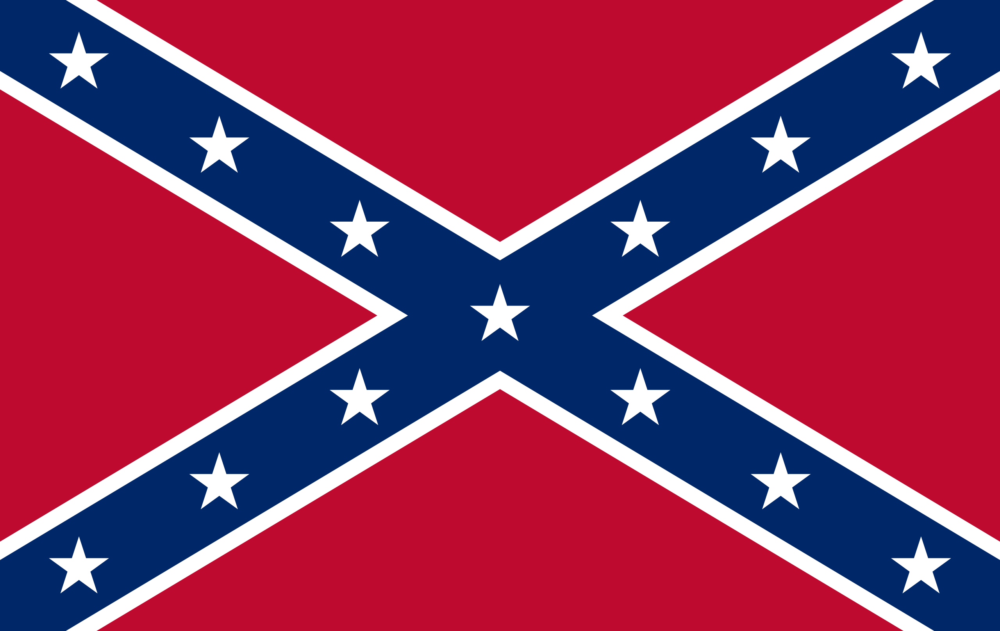

One of the most commonly used flags of Neo-Confederates.
The New Confederacy was a far-right proto-state that emerged during the White Tide following the collapse of the Sovereign Citizen's Alliance, surviving from 2031 to 2034.
The New Confederacy was built upon the ideas of Southern nationalism, seeking to create an independent state for the South, similar to the original Confederacy of the Civil War. The New Confederacy similarly seceded from the Union, only to be fully defeated by 2034. During its existence, the New Confederacy's government was characterized by ultraconservative policies and being in a state of rebellion throughout its whole history. For the majority of its existence its territorial control was limited to isolated communities in the Appalachia mountains.